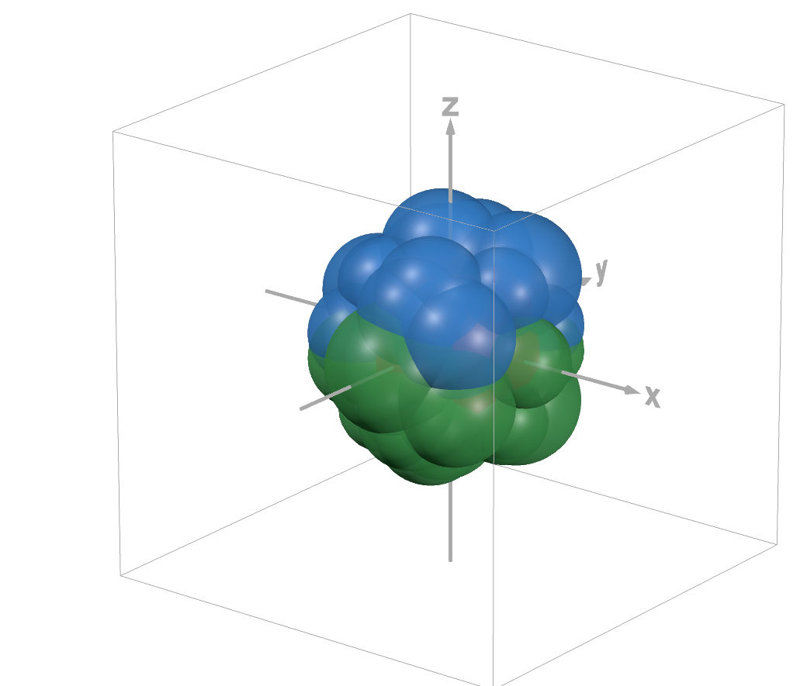

Unfolding Manifolds
1. What are Manifolds?
Put simply, manifolds are abstract geometric objects in some arbitrary dimension that we can use our typical Euclidean tools on — such as differentiation — to get an insight into the properties of the object. There are many different types of manifolds such as topological, analytical, $C^k$, smooth, etc., each of which have their own defining properties. But before we delve into definitions, it is best to recall the fundamentals of calculus since it plays a crucial role in understanding what manifolds are qualitatively.
2. Building an Intuition
Recall that for a function $f: \mathbb{R} \rightarrow \mathbb{R}$ to be considered differentiable, the limit as $x$ approaches $c$ of $\frac{f(x)-f(c)}{x-c}$ must exist for all $c$ in the function's domain. Differentiability also implies that $f$ has the property of being locally linear, which means that $f$ can be approximated at $c$ by a line. In order for $f$ to be continuous if and only if for every error $\varepsilon > 0$ there is a "threshold" $\delta > 0$ such that at every point $c$ in the domain within $\delta$, that is $|x-c| < \delta$, we have $|f(x)-f(c)| < \varepsilon$. Or in other words we have these open sets centered around our point $c$, often called the $\delta$-neighborhood of $c$, that map into open sets centered around $f(c)$, called the $\varepsilon$-neighborhood of $f(c)$. We also say that if a function is differentiable, then it is continuous, making differentiable functions a subset of continuous functions.
We also know that derivatives of functions are themselves functions, meaning that derivatives can be tested for differentiability and continuity. Some familiar, "nice" functions that have both continuous and differentiable derivatives include but are not limited to $x^2, \sin x, e^x$, etc. All of these functions' derivatives are continuous. We notate this by saying these functions are $C^1$, meaning that the 1st derivative is continuous. We can expand this to multiple derivatives to define functions that are $C^k$, or functions whose derivatives exist and are continuous up to the $k$-th derivative. We say that a function $f$ is $C^\infty$, or smooth, if every derivative of $f$ exists and is continuous.
We can extend both of these concepts into higher dimensions. Instead of a one-dimensional curve being locally linear, we can have an $n$-dimensional surface $M$ be considered locally Euclidean by using a near identical definition for differentiability that instead uses partial derivatives and magnitudes of vectors in place of absolute value for defining neighborhoods. If $M$ is $C^k$ or $C^\infty$ it means that despite being an abstract geometric object, we can relate it to the more intuitive and easier to work with $\mathbb{R}^n$ and the standard ideas of continuity and differentiability.
3. Charts and Atlases
Let us say that $M$ is some $n$-dimensional space, and that at some point $p \in M$, it has the property of being locally Euclidean in every $\delta$-neighborhood of $p$. We will call the open set that is the $\delta$-neighborhood located at that point $U$. Then we can define an approximation function $\phi: U \rightarrow \mathbb{R}^n$ that maps that open subset of $M$ into an open subset of Euclidean space. We would also like to be able to map back to $M$ from $\mathbb{R}^n$, so we assume that $\phi$ is bijective. We call the open set-function pair $(U, \phi)$ a chart. So if every point $p \in M$ is locally Euclidean, we can define a chart for every one of those points. Once enough charts are defined to cover the entirety of $M$, that collection of charts is called an Atlas. Just like how an atlas book is a collection of maps of the earth, an Atlas for a manifold is a collection of functions (maps) that display information about $M$ in $\mathbb{R}^n$.
Since the function $\phi$ maps open sets to open sets, it is possible for multiple charts to map the same point to $\mathbb{R}^n$. If we are trying to obtain information about $M$, it shouldn't matter what function we choose to map it — it should be intrinsic to the underlying space. So, let $U_1, U_2$ be open subsets of $M$, and let $\phi_1: U_1 \rightarrow \mathbb{R}^n$ and $\phi_2: U_2 \rightarrow \mathbb{R}^n$. Then, the set of points that get mapped by both charts is $U_1 \cap U_2$. Since our functions $\phi_n$ are bijective, we can go from one mapping, back into $M$, into the other mapping. This actually defines a function $\phi_2 \circ \phi_1^{-1}: \mathbb{R}^n \rightarrow \mathbb{R}^n$. Now we have managed to take abstract space $M$ and put it into purely Euclidean space, which we can perform calculus on without issue.
When it comes to actually defining a manifold, we need an atlas. That is, we need to define our collection of charts that map every point of our manifold into Euclidean space. As you can see in the figure below, we have an example of a finite atlas for the unit sphere that is made by making open sets centered at different points on the unit sphere that cover the entire surface. As you can guess, the choices for the open sets were made entirely arbitrarily. If an atlas is our instruction manual for how a manifold is defined, we want unambiguity on what that atlas is. We define a maximal atlas as the collection of ALL possible charts we could make for a space $M$. This way manifolds can be defined uniquely. Since a maximal atlas is the collection of all possible charts, if a space $M$ has an atlas, then it has a maximal atlas.

Following these definitions we can see that a lot of familiar objects in mathematics are manifolds. Any smooth curve or surface embedded in $\mathbb{R}^2$ or $\mathbb{R}^3$ is a manifold. Spheres and toruses are as well. Every open subset of the real number line is also a manifold. While brief, hopefully this has given an insight into what manifolds are and how they can be used in other fields of mathematics and science.
References
- An Introduction to Manifolds (2nd Edition) — Loring W. Tu
- Arbitrarily Close — John Rock